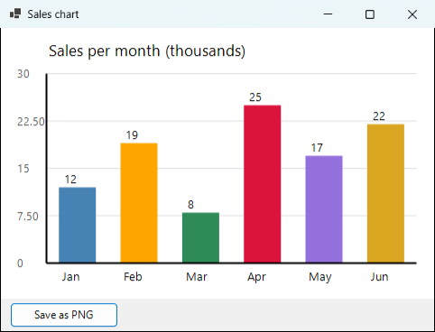

Tutorial 36: A chart
Turn numbers into a picture. A bar chart needs only a little arithmetic — scaling values to pixels, a round-numbered axis — and the drawing calls you already know.
What you will learn#
- the arithmetic of a chart: scaling values to pixels,
- a "nice" axis maximum,
- drawing a grid, bars, numbers and labels,
- saving the picture,
- testing a drawing by reading its pixels.
The plan#
A chart is a picture of numbers, and every point of the picture is computed:
- a plot area: left margin for the numbers, top margin for the title, bottom margin for the labels,
- a scale: the biggest value (rounded up to a nice number) fills the height of the plot area,
- for each value a bar: its height is
plotHeight × value / scaleMax, its left edge isleft + slot × index, - the text: title, numbers on the axis, value above each bar, label below.
The program#
# Tutorial 36: a chart - turn numbers into a bar chart with UiCanvas, show it in a window and save it as a PNG
load "dotnet.ring"
dnUseDesktop()
using {
"System"
"System.IO"
"System.Drawing"
"System.Drawing.Imaging"
"System.Windows.Forms"
}
C_WIDTH = 480
C_HEIGHT = 300
aLabels = ["Jan","Feb","Mar","Apr","May","Jun"]
aValues = [12,19,8,25,17,22]
aColors = ["SteelBlue","Orange","SeaGreen","Crimson","MediumPurple","Goldenrod"]
oForm = ""
oCanvas = ""
func main
oForm = uiForm("Sales chart",C_WIDTH,C_HEIGHT + 36)
oPicture = uiPictureBox(oForm,0,0,C_WIDTH,C_HEIGHT)
oCanvas = new UiCanvas(oPicture)
drawChart()
uiButton(oForm,"Save as PNG",10,C_HEIGHT + 4,120,28,"savePng()")
uiTest(oForm,"selfTest()")
uiRun(oForm)
uiEnd()
# ---------------------------------------------------------------- drawing
func drawChart
nLeft = 50 # room for the numbers on the left
nBottom = C_HEIGHT - 40 # the y of the bottom axis
nTop = 50
nMax = maxOf(aValues)
nScaleMax = niceMax(nMax) # the top of the vertical axis: a round number
oCanvas.clear("White")
oCanvas.text("Sales per month (thousands)",nLeft,12,"Black",13)
# the horizontal grid lines with their numbers
for nStep = 0 to 4
nValue = nScaleMax * nStep / 4
nY = nBottom - (nBottom - nTop) * nStep / 4
oCanvas.line(nLeft,nY,C_WIDTH - 20,nY,"#DDDDDD",1)
oCanvas.text("" + nValue,nLeft - 34,nY - 8,"#555555",9)
next
# one bar per value
nBars = len(aValues)
nSlot = (C_WIDTH - 20 - nLeft) / nBars # the width of the place of one bar
nBarWidth = nSlot * 0.6
for nIndex = 1 to nBars
nHeight = (nBottom - nTop) * aValues[nIndex] / nScaleMax
nX = nLeft + (nIndex - 1) * nSlot + (nSlot - nBarWidth) / 2
oCanvas.fillRect(nX,nBottom - nHeight,nBarWidth,nHeight,aColors[nIndex])
oCanvas.text("" + aValues[nIndex],nX + 4,nBottom - nHeight - 18,"Black",10)
oCanvas.text(aLabels[nIndex],nX + 2,nBottom + 6,"Black",10)
next
oCanvas.line(nLeft,nBottom,C_WIDTH - 20,nBottom,"Black",2)
oCanvas.line(nLeft,nTop,nLeft,nBottom,"Black",2)
oCanvas.show()
# the biggest value of a list
func maxOf aList
nMax = aList[1]
for nValue in aList
if nValue > nMax
nMax = nValue
ok
next
return nMax
# the next "round" number at or above a value: 25 -> 30, 8 -> 10, 120 -> 150. Charts look better with round axes.
func niceMax nValue
nPower = pow(10,floor(log10(nValue)))
for nFactor in [1,1.5,2,3,4,5,6,8,10]
if nFactor * nPower >= nValue
return nFactor * nPower
ok
next
return nValue
func savePng
cFile = new Path().Combine(new Path().GetTempPath(),"sales-chart.png")
oCanvas.oBitmap.Save([ :filename = cFile, :format = new ImageFormat().Png ])
uiMessage("Saved to " + cFile,"Chart")
func selfTest
dnAssert("the biggest value",maxOf(aValues),25)
dnAssert("round axis for 25",niceMax(25),30)
dnAssert("round axis for 8",niceMax(8),8)
dnAssert("round axis for 120",niceMax(120),150)
# the chart is really drawn: the April bar (the biggest) is crimson, and the background is white
dnAssert("white background",oCanvas.pixel(5,5),"ffffffff")
nSlot = (C_WIDTH - 20 - 50) / 6
nAprilX = floor(50 + 3 * nSlot + nSlot / 2) # pixel positions are whole numbers
dnAssert("the April bar is crimson",oCanvas.pixel(nAprilX,C_HEIGHT - 60),"ffdc143c")
# save it
cFile = new Path().Combine(new Path().GetTempPath(),"sales-chart-test.png")
oCanvas.oBitmap.Save([ :filename = cFile, :format = new ImageFormat().Png ])
dnAssert("the file was saved",new File().Exists(cFile),True)
new File().Delete(cFile)
SELFTEST OK (7 checks)How it works#
The scale#
The biggest value is 25. If 25 touched the top of the chart the axis would read 0, 6.25, 12.5... Ugly. niceMax finds a round number at or above the maximum: 25 → 30, 8 → 8, 120 → 150. It takes the power of ten below the value (10 for 25), tries the factors 1, 1.5, 2, 3, 4, 5, 6, 8, 10 and returns the first product that is big enough. The axis then runs 0, 7.5, 15, 22.5, 30. (Ring prints 7.5 as 7.50; use rounding or a format if you want 7.5.)
Pixels from values#
For a bar: nHeight = (nBottom - nTop) * value / nScaleMax. A value of nScaleMax fills the whole plot area; half of it fills half. The y of the top of a bar is nBottom - nHeight because y grows downwards on a screen: the bottom axis has the bigger y.
One bar per value#
The width available for one bar is nSlot, the plot width divided by the number of bars. The bar fills 60 percent of its slot and is centred in it, which leaves a gap between bars. The colour comes from a list.
The text#
oCanvas.text(text, x, y, color, size) draws the title, the axis numbers, the value above each bar and the label under it. Small offsets (-18, +6) place the text next to the bar without touching it.
Saving#
oCanvas.oBitmap is the .NET bitmap that the canvas draws on: Save([ :filename = ..., :format = ... ]) writes a PNG (tutorial 22).
Testing a drawing#
You cannot look at a picture in a test, but you can read pixels. oCanvas.pixel(x,y) returns the colour: the background is ffffffff (white), and a point inside the April bar is ffdc143c (crimson). The test also checks the helper functions maxOf and niceMax with plain dnAsserts. Pixel positions must be whole numbers: floor(...).
What you learned#
- chart = scale + bars + text,
- y grows downwards,
- a round axis maximum,
- tests can read pixels.
Exercises#
- Draw a line chart: points joined by
oCanvas.line. - Add a legend that lists the months with their colours.
- Read the data from a CSV file (tutorial 30).
- Draw a pie chart with
FillPie(Graphics), using the percentage of each value.